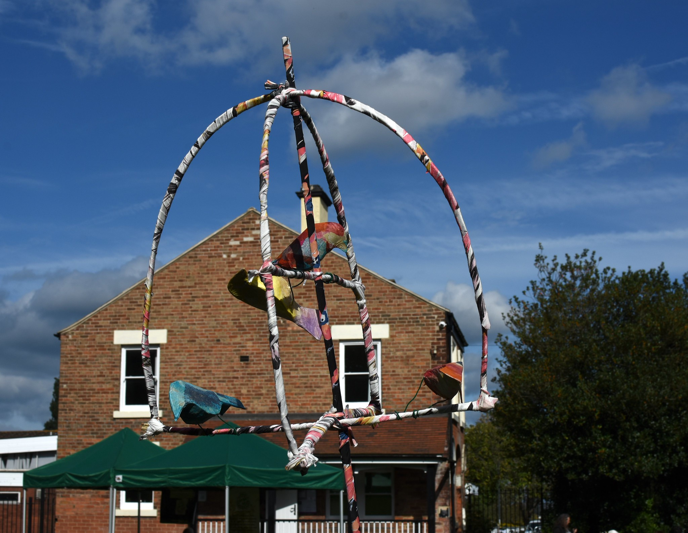

The Friends of Derby Arboretum — a passionate community of volunteers dedicated to this remarkable green space.
The Friends of Derby Arboretum was established to bring together people who care deeply about this nationally significant park — working to protect its heritage, improve its facilities, and organise activities that help the whole community enjoy and appreciate it.
We work in partnership with Derby City Council and other local organisations to ensure the Arboretum continues to flourish as a green, welcoming, and historically rich space for everyone.

Whether you want to volunteer, attend events, or simply support the Arboretum, we'd love to have you involved. Membership is open to everyone.
Get in Touch